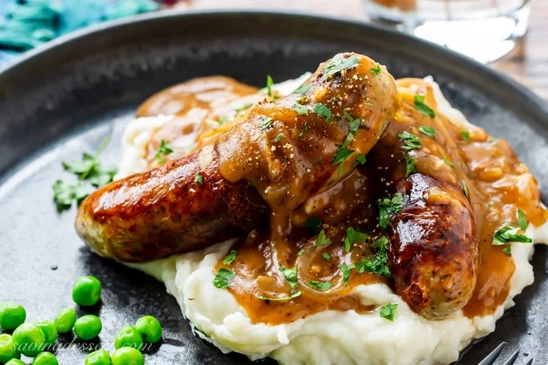

Bangers and mash is a classic English comfort food featuring savory sausages (bangers) paired with creamy mashed potatoes. This hearty dish is typically served with a rich onion gravy and a side of peas, making it a wholesome and satisfying meal perfect for any occasion. Enjoy the combination of flavorful sausages and smooth, buttery, potatoes for a taste of traditional English cuisine!